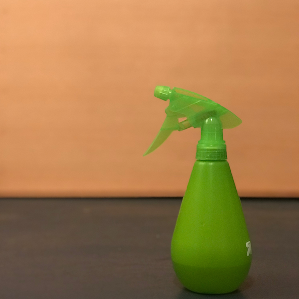
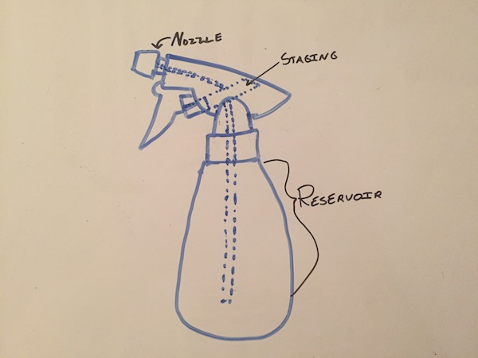
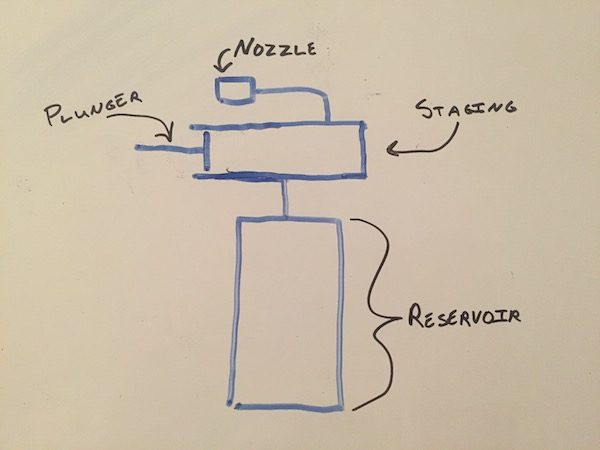
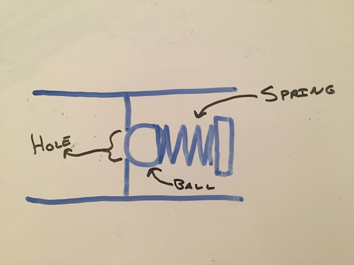
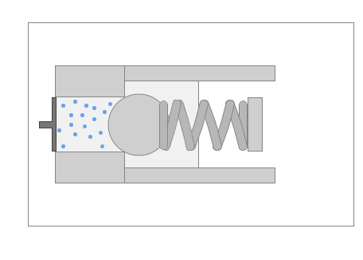
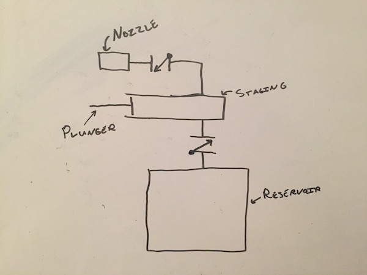
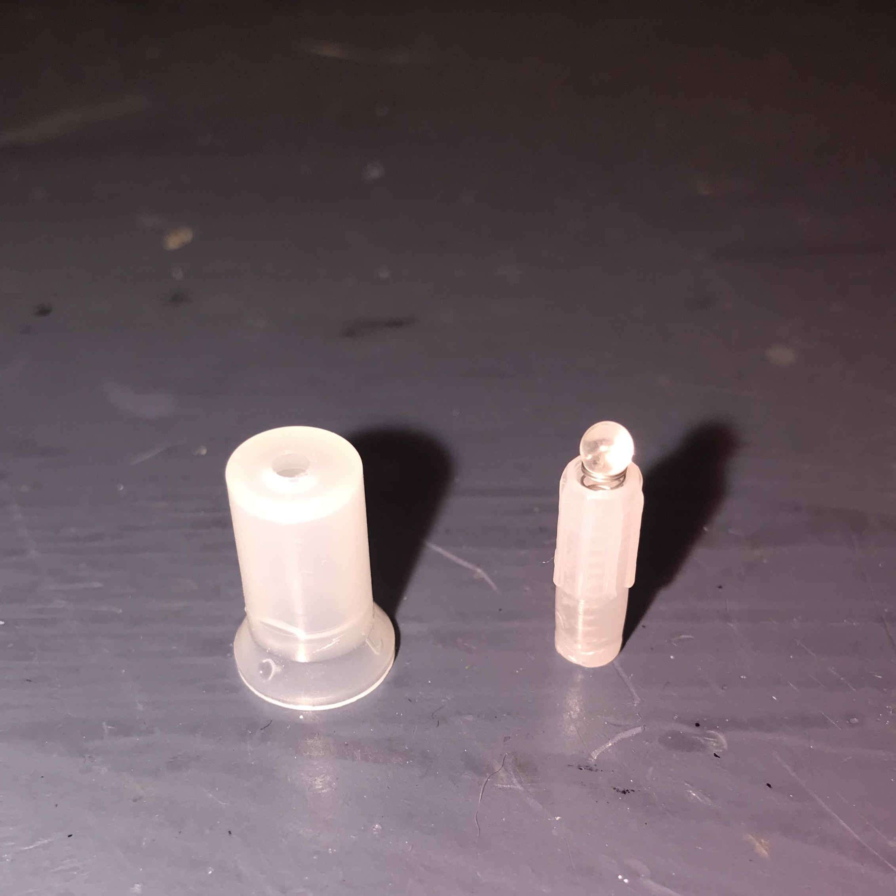

Why does a spray bottle work?
Jun 8, 2018 · 1154 words · 6 minutes read
Exploring a simple machine
I took apart a simple spray bottle to see how it kept fluid flowing only in one direction from the reservoir to the nozzle. It does so with simple check valves made of two pieces of plastic, a spring, and a small sphere. It’s a simple way to solve a tricky problem.

One way flow
It’s often useful to restrict flow to only one direction. One simple use case is in a spray bottle. Let’s think of a simplified spray bottle with three main components: the reservoir where we store the fluid, the staging area for the fluid that’s about to be sprayed, and the nozzle that connects it to the space outside where we’ll dispense our fluid. We want to take fluid from the reservoir, put it in the staging area, and dispense it to the outside.
Fluid sounds like a technical term, but it’s an important one in this context. Fluid refers to anything that flows, meaning its particles aren’t fixed. This means that both gases and liquids are fluids. We want to pay attention to particles that can move, as they’re the ones that move and push around on their own.
This sounds very abstract. Here are those sections on a spray bottle:

Here’s a simplified picture:

The main user interface for the spray bottle is the trigger. This is a simple lever with a plunger that extends into the staging area. When the trigger is pressed, it pushes on the fluid that is in the staging area, which then travels out of the nozzle. When the trigger is relaxed, a spring pushes it back out, creating a vacuum effect that pulls fluid from the reservoir into the staging area, allowing the cycle to continue with the next pull of the trigger.
Why this works
There are two important things happening here. First, as the plunger applies pressure to the fluid, it must move only through the nozzle to the exterior. If the fluid only went back to the reservoir, we would have a simple machine that draws water from its reservoir and pushes it back in. Not very helpful.
Also, when the trigger is drawn back out, it must refill the staging area from the reservoir, not from any fluid from the outside. In the case of a water spray bottle, the outside fluid is air. If it refilled the staging area with air, attempting to spray would just shoot the air back out of the nozzle. This would also be a simple machine that just sprayed a small amount of air. Again, not very helpful.
Solving these problems
These two problems are solved with the use of simple connections that allow fluid to move in only one direction. If we put one in between the reservoir and the staging area, we will never have to worry about fluid going from staging back to reservoir. This solves our first issue. If we also put one in the nozzle such that fluid can only move from staging to the nozzle, the air would never come into the staging area when we relax the trigger.
Very helpful. We can construct a very simple one-way connection using three main components: a ball, a spring, and a cylinder with a hole in one end.

The spring keeps the ball pushed against the circular hole. This means that any fluid on the spring side doesn’t fit through the hole, as the ball is in the way. Both the pressure from the spring and any pressure from fluid on the right pushes the ball tighter against the hole, ensuring that there’s no space for fluid to flow to the left.
Now, let’s apply pressure on the left side with a plunger, which causes the fluid on the left to push against the ball. If that pressure is more than the pressure from the right (from the spring and the right fluid), it will push the ball back, allowing some fluid from the left to escape around it through the hole. Fluid now successfully flows from the left to the right. When we stop applying pressure, the pressure from the right once again dominates, and the ball is pushed tightly back against the hole forming a seal.

Note that we’re talking about pressure from a fluid. This pressure could be from water, oil, air, or any other fluid. The general idea of pressure is the same for each; many small particles are bouncing against surfaces.
If we’re able to apply pressure on one side, we can make it so that our fluid only flows one direction.
Let’s put a one way connection that allows flow from the staging area to the nozzle. When we push on water in the staging area, it will force its way through the nozzle, but when we relax the trigger, air will not come back in. Here, the force that pushes against the spring to open the valve is the pressure created from pulling the trigger.
We also want to ensure that fluid can only flow from the reservoir to the staging area. Let’s add a one-way connection there too.
This also makes sense. When we relax the trigger, we want it to pull water from the reservoir, but when we push on the same water, we don’t want it to go back to the reservoir. Here, the force that pushes against the spring to open the valve is the pressure created from the vacuum pulling on the spring side.

With those two check-valves in place, we can now exactly control the flow direction of the fluids, and we can successfully spray our water.
Here’s the check valve from the nozzle of the spray bottle. The cylinder on the left goes over the group on the right, and the ball is pressed into the underside of the hole.

Schrader Valves
What if we wanted to be able to open the valve manually? This is actually the same principle behind air valves on car and bicycle tires. Instead of a ball, a specially shaped pin is forced by a spring to form a seal. Part of that pin extends past the valve so that you can push it from the other side of the valve. Below is an example of a Schrader valves, and it works in a very similar manner. Take a look at the animation; how is it similar to the ball check valve from earlier? How is it different?
 Thanks to Staffanlincoln for the Schrader valve GIF.
Thanks to Staffanlincoln for the Schrader valve GIF.
{kind=link}
Update: this post got quite a few comments on Hacker News, and I recommend reading through for some interesting discussion! https://news.ycombinator.com/item?id=17273649
Second update: this post has been translated into Japanese if you’re interested: https://gigazine.net/news/20180611-why-does-spray-bottle-work/